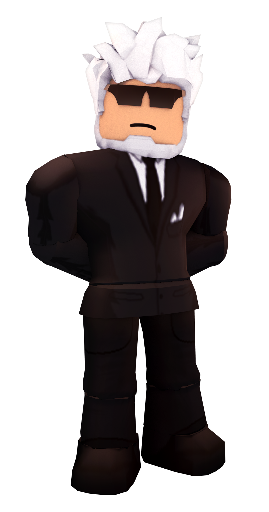

ENTRY POINT
Rachael Thorne, also known as Rose, is one of the main characters of Entry Point and the mission coordinator of the player for multiple missions. She plays an important role in the story. Her codename, Roselin, is French for "Finch" which fits with the bird naming pattern for other characters.Rachael Thorne was born in Monaco on May 21st, 1986. She came from a semi-wealthy family and was a self-taught hacker.
 the freelancer does not have a clear backstory.All that we know he/she got a custom raven from his/her friend
the freelancer does not have a clear backstory.All that we know he/she got a custom raven from his/her friend
Mason Wolfe, also known as The Director or Kingfisher, is one of the main characters in Entry Point and the leader of Halcyon. He is only seen during the beginning and at the end of the game, but he is responsible for multiple events that occur during the game.The Director is first introduced in the Halcyon cutscene and is the one who hired the Freelancer for Halcyon. He oversees all the operations and activities of Halcyon, while other members like Wren or Rose coordinate the actual missions. He is last seen in the Epilogue cutscene and is likely responsible for the death of Rose.The Director has a very formal look, wearing a black suit and a pair of black shades. He is the oldest character in the game, as evidenced by his date of birth, and represented by his white hair and beard.The Director has a very formal look, wearing a black suit and a pair of black shades. He is the oldest character in the game, as evidenced by his date of birth, and represented by his white hair and beard.
Eric Reed, also known as Wren, is one of the main characters of Entry Point and the first member we meet from Halcyon. He initially served as the mission coordinator during Black Dawn and The Freelancer, but was later promoted to Operations Coordinator.Wren is first encountered in Black Dawn, but he is only first seen in the Halcyon cutscene. He coordinates the operations of Rose's squad up until The Lakehouse.During Dedication his colder side is revealed as he attempts to assassinate the Freelancer. However he fails and gets executed in the process.
Jack Miles, also known as Jackdaw, is one of the main characters of Entry Point. He is introduced as the main enemy of Halcyon and leader of Phoenix.Jack "Jackdaw" Miles is a former Halcyon operative and was the one who trained Wren and Rose. He was to be executed during Operation Ember Shroud, but survived when Rose secretly saved him. He was assumed dead by Halcyon. As an act of revenge, he founded Phoenix together with Rose. After five years of inactivity, Jackdaw reappeared in 2012, ambushing a Halcyon getaway van which was returning from a mission in Arizona. Halcyon concluded that this was an act of revenge and that Jackdaw is coming to destroy Halcyon.
 Ryan Ross is a side character in Entry Point. He is a multi-millionaire who is financing Phoenix operations.Ryan Ross is only encountered in The Financier, where his interrogation and extraction/elimination are the main objectives of the mission. While the exact manner of his death is unknown, it is presumed that he was killed during the mission or after interrogation.Ryan wears an almost purely white outfit: white suit, white pants, and black shoes. He has grey colored charmer hair. In the game, Ryan's behaviors and extensive security reflect his paranoia, surrounding himself with guards, and if alerted, locking himself in a sturdy panic room, as well as carrying a Raven handgun.
Ryan Ross is a side character in Entry Point. He is a multi-millionaire who is financing Phoenix operations.Ryan Ross is only encountered in The Financier, where his interrogation and extraction/elimination are the main objectives of the mission. While the exact manner of his death is unknown, it is presumed that he was killed during the mission or after interrogation.Ryan wears an almost purely white outfit: white suit, white pants, and black shoes. He has grey colored charmer hair. In the game, Ryan's behaviors and extensive security reflect his paranoia, surrounding himself with guards, and if alerted, locking himself in a sturdy panic room, as well as carrying a Raven handgun.
Blake Danger, also known as Falcon, is one of the main characters of Entry Point. He is a loyal Halcyon operative who first appeared in The Blacksite, although only his helicopter was seen. Later in The Scientist, he appeared as an actual NPC.Falcon only appears in The Blacksite and The Scientist and not much is known about him. His appearance was first revealed in the Halloween Hitlist 2019 teaser. His NPC appearance in The Scientist is the last time he is seen as he is killed after or during the mission.
Sofia Pearl, also known as Sparrow, is one of the main characters in Entry Point. She is a getaway pilot who works for Phoenix and is very fond of donuts, as evidenced from dialogue in The Withdrawal.Sofia “Sparrow” Pearl is first encountered in The Withdrawal where she extracts the Freelancer by helicopter during loud. She later reappears in The Scientist and The SCRS where she is the getaway pilot once again. She also appears in the cutscene Sunset. Additionally, she can be seen in the Shadow War menu wielding a 480 MCS and a Raven.Sparrow has brown hair which is usually dyed blue, wears shorts, a black crop-top under a blue vest, and a pilot's headset. She is much more relaxed and does not take things as seriously in contrast to Jackdaw. She has a fondness for donuts as stated by one of her lines in The Withdrawal.
Harvey Brooks is one of the main characters of The Freelance Heists. He is the main coordinator of The Setup, The Lockup and The Score.Harvey is first introduced in Prelude as a friend of the Freelancer. He is a talented social engineer and thief, coordinating multiple missions. Ultimately he meets his fate at the hands of the Freelancer. Depending on the player's choice he is either killed, or arrested by police later on.
Hannah Bennett, also known as Jade, is one of the main characters of The Freelance Heists. She is a coordinator in The Setup, and assists you with sniping in The Lockup and the first part of The Score.Jade is first introduced in Prelude as a friend of Dmitry. She is a talented, self-proclaimed "world-class sniper", and coordinates The Freelance Heists missions. Ultimately however, she and Dmitry are betrayed by the Freelancer and Harvey, and are gunned down.Halcyon attempted to recruit Jade due to her killing of cartel members in California, however the recruitment operation failed due to her involvement with Harvey. Halcyon were interested in recruiting her but were unable to do so after the botched operation. Jade initially has a hostile personality toward the Freelancer and especially to her former partner. Throughout the Freelance Heists, she begins to trust them more. She seems to have a soft spot for Dmitry, calling him a teddy bear. However, her original hostile intentions come true when her former partner betrays her.
Dmitry Komolov is one of the main characters of The Freelance Heists. He is a coordinator in The Lockup and the escape pilot in The Score.Dmitry Komolov is a quiet man, acting as the Getaway Pilot in The Score and sometimes hopping on the radio on The Lockup. He is generally not very talkative, only speaking when necessary or when being directly talked to. His goals seem to be to get out of the business, wanting to stop living a life of crime and get back to his loved ones.
Celeste Rivera or Horizon is a side character in Entry Point. She is an experienced Halcyon scientist who defected to Phoenix during the events of The Scientist.Little is known about Celeste Rivera. She was a Halcyon Scientist who offered to give vital information to Phoenix if she were to be extracted from her safe house. Her codename is Horizon.Rivera wears a white shirt with a dark blue vest and dark pants, along with a watch on her right hand. As her title suggests, she seems to be extraordinarily intelligent and even has to help out the Freelancer during stealth. Her knowledge is very broad and she knows very much about Halcyon.